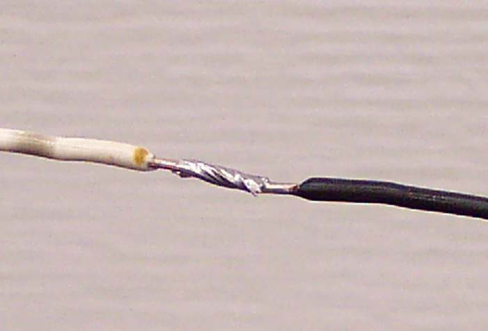
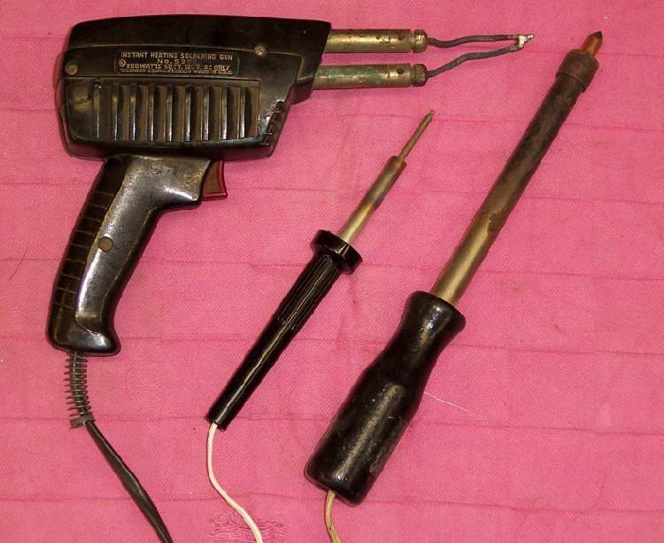

A soldered joint is strong and carries current with little loss. Use it to repair a broken wire or to add a wire to a circuit. A twisted joint wrapped in tape, with no solder, will loosen and corrode, so do not leave one on a bike.
Safety
- Wear eye protection. Damp or dirty wire can spit hot solder.
- The iron and the solder are hot. Put the iron in a stand, never on the seat or tank.
- Disconnect the battery negative (-) first. Keep fuel and fuel vapour away.
- Acid flux (tinner's fluid) burns skin and corrodes wire. Use it only on badly corroded wire that will not take solder, never on electronic parts, and wipe it off afterwards.
You need
- Wire of the same thickness as the old wire, or thicker. Never use thinner wire: it heats up and blows fuses.
- Rosin-core solder and flux.
- Heat-shrink tubing a little longer than the joint, in the right width.
Steps
- Switch off and disconnect the battery negative (-).
- Cut out the damaged section. Cut back to bright, clean copper.
- Strip about 20 to 25 mm of insulation from each end.
- If the copper is dark or green, scrape or sand it until it is shiny.
- Slide a piece of heat-shrink tubing onto one wire now. It cannot be added after the joint is made.
- Twist the two bare ends together firmly.
- Put flux on the twist.
- Heat the twist from underneath with the iron. Touch the solder to the wire, not to the iron. The solder should melt and flow into the strands.
- Remove the iron and hold the joint still until the solder sets.
- Look at the joint. It should be smooth and shiny. A ball of solder sitting on top, or gaps, means the solder did not bond. Reheat with more flux, or clean the wire again.
- Slide the tubing over the joint and heat it until it grips. Tape also works but is less neat and less sealed.
- Pull gently on the wire on both sides of the joint. It must not move.
- Tie the wire to the harness on both sides of the joint so vibration does not bend it at the joint.
Check your work
- The circuit works, and the wire stays cool after a few minutes of use.
- No bare metal shows. The joint cannot touch the frame or engine.
- The wire has slack at the steering head and is clear of heat and moving parts.
If it did not fix the problem
- Wire joint is good but the circuit still fails: Find a wiring fault.
- Wire is near a stator or engine heat: a soldered joint can soften and part when hot. Use Join wires with crimp connectors.
- The wire melted: find the cause first with Find a short circuit.